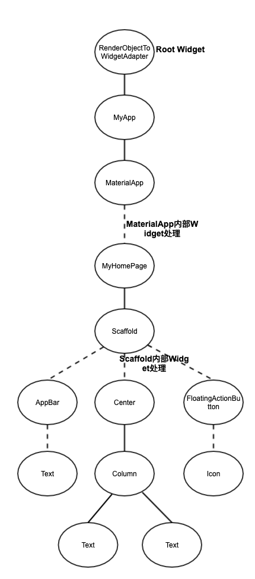
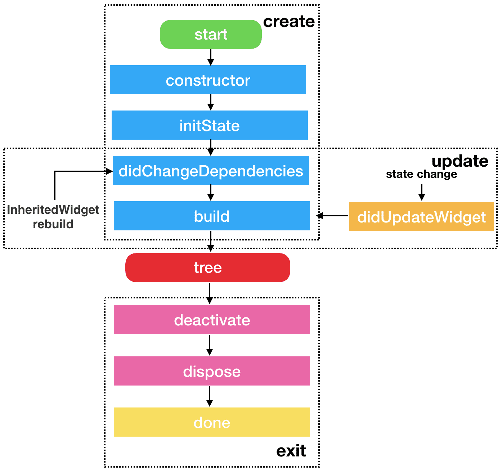
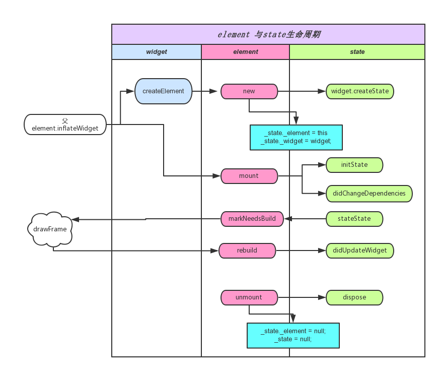

之前的内容我们讲的是Flutter的基本布局控件使用方式，包括单元素布局与多元素布局。为什么会有这两种区分呢？还有一些控件根本没有布局方式，比如RichText，那它是怎么展示的？
这一节我们就来深入看下Flutter的Widget是怎么构建、布局、渲染的，它们之间又靠什么联系在一起。
首先我们从官方示例开始看起。
Flutter示例说明
使用Android Studio创建Flutter工程，会创建一个默认的界面，我们可以从这个界面分析出一点内容。
main.dart 内容如下：
1 | import 'package:flutter/material.dart'; |
之前写了很多常用widget的使用方法，但是还没有系统地对展示过程进行说明，这里对Demo中的每一行作用，进行详细说明：
-
import 'package:flutter/material.dart';这是dart语言的用法，这里导入的是MaterialDesign风格的包，里面有各种MaterialDesign风格控件以及常用控件。我们常用的MaterialApp、Scaffold、RaisedButton、Card等，都属于MaterialDesign风格的控件。 -
void main() => runApp(MyApp());这个是主方法入口，main方法为程序调用方法，runApp方法将一个Widget加到根节点中，添加方式稍后再原理解析中详细说明。MyApp()创建了一个Widget对象，下面的代码是MyApp类的声明。 -
MyApp类声明中，说明了这是一个StatelessWidget的子类。也就是说，这个类应该是无状态的，里面的字段应该是不可变更的，为final类型。如果想要更新这个Widget的展示效果，只能重新创建一个新的对象来实现而不能复用原来对象。 -
MyApp的
build方法返回了需要展示的Widget内容，这里返回的Widget和MyApp本身没有关系，只是他们的Element有关系，这一点要弄清楚，我之前也是在这一项卡了很久才理解。如果真的要想象这两个有关系，可以认为是父子关系。在这里返回的Widget是MaterialApp，这是一个典型的MaterialDesign应用，里面指定了theme，而在home中设置的是真正的界面widget.另外MaterialApp中也支持路由设置。 -
MyHomePage类声明中，说明了这是一个StatefulWidget的子类，它与StatelessWidget的区别在于它无需重建类即可变更界面内容，变更方式通过State来实现。 -
_MyHomePageState中存储了MyHomePage的状态信息，在State中进行变更，界面会随之变动。同样通过build方法提供界面展示效果，里面返回的是一个Scaffold类型Widget，这是最常用的MaterialDesign风格设计框架，提供了各种展示效果。在Demo中分别提供了AppBar、界面主体以及一个浮动按钮。在_MyHomePageState中还设置了一个方法，点击按钮时，更新界面展示内容。
下面是一个这个界面的效果：

Widge类型说明
在Demo中使用到了几种Widget？一一列出来：MyApp、MaterialApp、MyHomePage、Scaffold、AppBar、Text、Center、Column、FloatingActionButton、Icon.
这么多组件中，我们自己定义的只有两个：MyApp、MyHomePage，而这两个控件的父类，分别是：StatelessWidget、StatefulWidget，这两种也是Flutter推荐使用的两个父控件类型。
按照官方的设计原则，StatelessWidget、StatefulWidget这两种组合Widget基本上可以满足需要的所有情况，不过这不意味着我们不能自定义其它Widget.
下面列出几种经常遇到的基础Widget：
-
StatelessWidget 组合型Widget，widget实例创建后，不可更改。比如：Container、RaisedButton等，如果有变动，需要重新创建实例。
-
StatefulWidget 组合型Widget，widget实例携带一个state实例，state实例内容可变更。这种Widget一般用于界面绘制的桥梁。但是如果滥用也会产生性能问题，本文后面会根据源码给出性能优化建议。
-
RenderObjectWidget 渲染型Widget，这种一般是基础widget，可以将该widget内容渲染出来。
-
SingleChildRenderObjectWidget 渲染型Widget，这种是RenderObjectWidget的一个子类，特点是该Widget只有一个子控件，比如之前介绍过的Padding、Align等。
-
MultiChildRenderObjectWidget 渲染型Widget，这种同样是RenderObjectWidget的一个子类，特点是该widget可以有超过一个的子控件，比如之前介绍过的Flex等。
-
LeafRenderObjectWidget 渲染型Widget，这种同样是RenderObjectWidget的一个子类，特点是该widget不会有子控件，只是由其本身进行渲染，比如RichText、RawImage等。
-
ProxyWidget 代理型Widget，这种widget用来进行数据在widget之间传递，比如常用的InheritedWidget，一般的状态管理框架也是基于这个原理实现的。
我们的Demo，乃至于各种复杂的界面，主要也是这几种Widget组成的。
界面构建过程
上面说了几种基础Widget类型，如果将Demo中涉及到的Widget整理成一个树（实际上widget不算是一个真正的树，至少不是一个静态树，真正的树是Element和RenderObject），可以看到如下结构：

在树形结构中可以看到Widget的互相依赖过程，但是这个Widget树是怎样变成我们可见的界面的？中间经过了哪些转换过程？我们先说一下两个开发时没有涉及到的东西：Element和RenderObject
-
Element 这个是真正的节点，用来关联Widget与渲染对象。每一个Widget都对应着一个Element，但是Widget实例会经常变动，但是渲染树不能经常改变，因此Element会尽可能改变而不是重新创建。
-
RenderObject 是一个渲染节点数，这里面的每一个节点都会在界面上绘制出来。RenderObject与Element或者Widget不是一一对应的，只有RenderObjectWidget以及它的子类才会存在RenderObject
Widget、Element和RenderObject三者关系
上面简单介绍了Element、RenderObject，但是感觉还是不清楚，下面我们通过Flutter源码进行说明：
查看Widget类的代码，里面有这样一项：
1 | Element createElement(); |
这个就是Widget对应的Element，在不同的Widget中，会创建不同的Element，比如StatelessElement、StatefulElement、RenderObjectElement、SingleChildRenderObjectElement、MultiChildRenderObjectElement、LeafRenderObjectElement、ProxyElement等。因为是一一对应，同样在Element中也会持有Widget的对象：
1 |
|
而RenderObject则针对的是可渲染Widget，也就是RenderObjectWidget，部分代码如下：
1 | RenderObject createRenderObject(BuildContext context); |
也就是说会在RenderObjectWidget的子类中创建RenderObject，但是实际上这样做只是为了方便开发人员使用，真正情况还是在Element中持有RenderObject对象，如下面代码所示：
1 | RenderObject get renderObject => _renderObject; |
所以三者的情况就是Widget用于开发人员设计控件，RenderObject用于界面渲染，Element连接两者展示。
Flutter与Android界面开发对比
Android界面开发是命令式的，如果需要变更某一个View，需要获取该View的句柄，然后对view进行参数变更。这样的实现方式有很强的针对性，同时绘制过程中也会自动判断，可以精准的对某一个View进行绘制。但是这种方式有一些缺点，如果变动的view比较多时，就需要为每一项单独设置，而且需要开发人员自己控制的话，较为复杂的界面逻辑需要很强的处理能力。
Flutter界面开发是声明式的，每次只要定义好数据项，同时声明这些数据项与Widget的绑定关系。真正使用时，只需要变更数据内容，然后重建Widget实例就可以了。这种方式的优势就是简单粗暴，并更数据集后，绑定的相关界面项会自动调整。但是所有相关Widget都换了一遍，如果渲染内容的实例（也就是RenderObject）也都重新变更一遍，那对于界面效果来说，是一个非常严重的打击。
但是实际上，Flutter的渲染效率很高，Widget虽然重建，但是Element以及RenderObject不一定会进行重建，具体的渲染过程，我们可以跟踪源码来看下。
界面创建过程
main方法是主入口，里面只调用了runApp方法。可以看下这个方法的实现：
1 | void runApp(Widget app) { |
注意里面的attachRootWidget方法，这个方法是将我们提供的Widget添加到RootWidget中，具体代码如下：
1 | void attachRootWidget(Widget rootWidget) { |
这里又调用了attachToRenderTree，这个方法将当前渲染内容加入到渲染树中，看相关代码：
1 | RenderObjectToWidgetElement<T> attachToRenderTree(BuildOwner owner, [RenderObjectToWidgetElement<T> element]) { |
初始情况下，RootElement为空，因此创建新的Element。然后通过BuildOwner.buildScope将Element树以及RenderObject树添加子节点。实际上buildScope这个方法不仅在创建界面时用到，刷新界面时同样用到了，后面刷新界面时详细说明一下。
在创建界面时buildScope方法可以简化为：
1 | void buildScope(Element context, [VoidCallback callback]) { |
由此可以看出，实际上只是执行了传入的callback方法。继续根据传入的方法，只是执行了如下语句：
1 | element.mount(null, null); |
这个是根节点进行mount操作，因为没有父节点，所以parent传为空，查看相应代码：
1 | void mount(Element parent, dynamic newSlot) { |
_rebuild()代码如下：
1 | void _rebuild() { |
注意，updateChild同样也是界面创建于刷新时的重要处理过程，后面会详细说明，这里只需要认为这里会进行子控件的添加，而且是递归添加处理，分别调用子控件的mount操作。其中widget.child就是我们传入的Widget实例，在Demo中就是MyApp()。
查看Element类的mount方法，这里将RenderObject加入到相应的树中。
1 | void mount(Element parent, dynamic newSlot) { |
之前我们说过，Element与RenderObject不是一一对应的，所以需要寻找到可用的父RenderObject，再添加新的节点。
界面刷新过程
上面的创建过程很好理解，每个Widget都有一个Element，同时也与RenderObject保持关系。但是这样做很麻烦，为什么不直接创建一个渲染节点呢？就像Android那样做？还要维护三者间的关系。
我们之前也写过，Widget是可以随意创建的，但是Element却要尽可能地保持复用，所以刷新时这三者关系还要再好好设计。
界面刷新需要一个切入点(比如Android通过invalidate通知)，在Flutter中，就是通过State的setState方法来进行刷新。
查看setState源码，去掉一些无用代码
1 | void setState(VoidCallback fn) { |
很简单，就是调用Element的markNeedsBuild方法，继续查看：
1 | void markNeedsBuild() { |
这里面将Element标记为dirty，然后调用scheduleBuildFor方法，继续查看：
1 | void scheduleBuildFor(Element element) { |
这里将该element加入到_dirtyElements中，标记这个节点刷新时需要进行处理。然后执行了onBuildScheduled方法。这个方法进行了什么操作，继续查找源码：
1 | buildOwner.onBuildScheduled = _handleBuildScheduled; |
终于找到了，调用了一个native方法 Window_scheduleFrame，这个方法在Flutter Engine中实现。查看注释内容，会回调onBeginFrame和onDrawFrame这两个方法。继续查找源码：
1 | window.onBeginFrame = _handleBeginFrame; |
由于相关代码较多，这里简化一下：
1 | void drawFrame() { |
又调用到了buildOwner.buildScope方法！
之前创建界面时采用了这个方法，现在刷新时也用到了，详细说明一下：
1 | void buildScope(Element context, [VoidCallback callback]) { |
代码中可以看到，首先将_dirtyElements进行排序，这是因为节点可能有很多个，如果其中两个节点存在级联关系，父级的Widget build操作必然会调用到子级的Widget build，如果子级又自己build一次，相当于出现了重复操作。因此通过深度排序就会避免这个问题。
排序结束后，对每一个Element进行遍历，执行rebuild操作。需要注意的是，如果在遍历过程中增加了新的节点，那么就需要重新排序。rebuild操作后面详细说明。
所有Element都rebuild后，清空_dirtyElements集合，节点状态恢复正常。
rebuild示意代码如下：
1 | void rebuild() { |
继续跟踪代码：
1 | void performRebuild() { |
这里的build方法最终调用的是Widget中对应的build方法。updateChild方法同样也是创建界面时调用的方法，继续跟踪源码：
1 | Element updateChild(Element child, Widget newWidget, dynamic newSlot) { |
这个方法就是Widget实例变更，但是Element实例不变的核心了，这里分成了四种情况分别处理：
- 如果不存在新的Widget，那么说明这一个节点应该取消掉了，执行
deactivateChild方法。 - 如果子节点的widget和新的widget一致（这里的一致指的是同一个对象，这个也是允许的），直接返回这个子节点。
- 如果两个widget不是同一个对象，判断类型是否相同，通过
canUpdate方法判断，依据是Widget类型一致，同时Key一致。这种情况下，只需要更新子节点就好了。因此这一步就是widget变更，但是element不变更的原因。 - 其它情况下则认为子节点是新增的，调用
inflateWidget进行子节点创建，里面与创建界面相同，执行了mount操作。
上面的代码都是ComponentElement的类中处理方式，也就是常用的StatelessWidget与StatefulWidget使用的Element。这个过程比较复杂，按照我个人的见解来说，如果想要不进行变更，父级的Widget是不能改变的，否则无法找到锚点，所以界面刷新都是从StatefulWidget开始的，而不能从StatelessWidget开始。刷新开始后，在rebuild中进行递归处理，以StatefulWidget实例为锚点，一级一级地维护Widget与Element的关系。
如果不是ComponentElement，针对RenderObjectElement，则会调用下面的处理：
1 | void performRebuild() { |
每一种RenderObjectElement都会有自己的updateRenderObject处理方式，类似于Android的View操作，针对每一个View来设置属性，这里不再详细说明。
到这里，buildOwner.buildScope(renderViewElement);方法就已经结束了，还记得不，再贴一下drawFrame代码：
1 | void drawFrame() { |
剩下执行super.drawFrame();，通过pipelineOwner将RenderObject绘制到界面上，不再详细说说明：
1 | void drawFrame() { |
然后再执行buildOwner.finalizeTree();，这里面将一些设置为deactive的Element进行回收，这部分涉及到了生命周期，下面会详细说明。
界面渲染过程
继续上面的内容，前面说了界面构建的过程，创建好了RenderObject树，那么RenderObject tree怎么进行渲染呢？
继续看drawFrame方法：
1 | void drawFrame() { |
pipelineOwner.flushLayout()对需要relayout的RenderObject对象重新测量。
1 | void flushLayout() { |
先将_nodesNeedingLayout集合根据节点深度进行排序，然后重新进行layout。_nodesNeedingLayout集合的内容在每个RenderObject更新时会进行标记的，比如RichText:
1 | set text(TextSpan value) { |
查看源码，_layoutWithoutResize方法基本上就是调用performLayout方法，这个方法在每个RenderObject中的实现都不一样，不过约定是进行布局展示后，调用child.layout方法，继续查看这个方法：
1 | void layout(Constraints constraints, { bool parentUsesSize = false }) { |
上面这段代码可以分析出很多东西：
!parentUsesSize || sizedByParent || constraints.isTight || parent is! RenderObject 这四种判断条件设置relayoutBoundary为RenderObject本身，这有什么用？用处可大了。
约束条件是沿着树的深度，从上到下的，但是layout布局是从下到上的，这个很好理解。大部分情况下，父控件的大小除了约束条件外，还依赖于子控件的大小，所以要从下向上分别layout，当然paint正好相反，是从上到下的顺序，这个后面说明。relayoutBoundary指的是布局边界，也就是说，这个renderObject的大小是固定的，不会因为其子节点的大小而变化，这种情况下就可以认为这个RenderObject就是一个锚点，它的子节点有变动，不会影响到父节点的layout。
那上面这四种情况分别是什么呢？首先还是需要先说明下约束条件
约束条件
为了简单说明，这里只说下BoxConstraints，也就是边界约束，而更为复杂的SliverConstraints其它文章中再详细说明。
先看下BoxConstraints的构造方法，里面就已经包括了所有属性：
1 | const BoxConstraints({ |
这个很好理解，看字面意思就能明白，分别约束了最大/最小宽度、最大/最小高度，也就是要求渲染后的视图一定要在这个范围内展示。而上面的构造方法则展示了最为宽松的约束条件：最小高度或宽度为0，最大高度或宽度为无穷大。
在实际使用时，一般会将父节点的约束条件传递给子节点，如果子节点有额外的约束条件，则进行比对添加，然后再传给下一级。
约束条件很简单，但是根据这四种条件，会有几种类型：
- tight 如果最小约束(minWidth，minHeight)和最大约束(maxWidth，maxHeight)是一样的，那么就限定死了这个节点的宽度与高度。
- loose 如果最小约束都是0.0
- bounded 如果最大约束都不是double.infinity
- unbounded 如果最大约束都是double.infinity
- expanding 如果最小约束和最大约束都是infinite
明确约束的概念后，我们继续分析渲染过程。
继续渲染过程分析
之前说到了四种情况，下面分别进行说明：
- !parentUsesSize parentUsesSize表示父节点是否要依赖子节点的size，如果该值为false，子节点要重新布局的时候并不需要通知父节点
- sizedByParent sizedByParent表示当前的节点虽然不是isTight，但是通过其他约束属性，也可以明确的知道size，比如Expanded，并不一定需要明确的size
- constraints.isTight 这个上面已经说明了
- parent is! RenderObject 这个更明确了，父节点都不能进行渲染，自然不能进行size操作
非四种情况下，则调用performResize与performLayout遍历所有子节点，直到layout完成。
按照之drawFrame处理，flushLayout完成后进行flushCompositingBits，这个方法是用来为每个RenderObject设置适当needCompositing值，最终needCompositing将会决定生成多少layer提交给引擎，引擎中叠加绘制每一层layer（skia等经典用法，mix也是类似实现）。查看下面代码：
1 | void flushCompositingBits() { |
每一个layer内容会同步变更，可以将一些paint较为复杂的节点单独设置一个layer，或者经常变动的paint设置为单独layer，这样可以减少多次paint导致的性能耗损。
继续查看flushPaint相关代码：
1 | void flushPaint() { |
基本格式与前面一样，注意PaintingContext.repaintCompositedChild这个方法：
1 | static void _repaintCompositedChild( |
isRepaintBoundary为true的RenderObject会创建一个自己的layer，最终调用了RenderObject.paint方法。
Flutter会把所有的layer都加入到ui.SceneBuilder对象中。然后在renderView.compositeFrame()中 ui.SceneBuilder会构建出ui.Scene（场景），交给ui.window.render方法去做最后真实渲染，最终绘制过程在Flutter引擎中实现并展示。
1 | void compositeFrame() { |
到现在为止，界面构建过程与渲染过程都已经说明完，那我们跟踪源码的目的是什么呢？至少我们可以做到下面三点：
- 可以对源码进行修改。目前的代码还不是很完善，对于一些特殊的要求，我们可以通过源码修改的方式来完成，而且根据实践，在Android Studio中修改后的源码可以直接参与编译，不需要任何过程。
- 了解渲染过程，同时也了解了Widget、Element、RenderObject的处理方式以及生命周期，可以自己实现自定义的控件效果。
- 了解整个渲染过程，出现问题后能够知道瓶颈在哪里，同时增加绘制效率，防止卡顿发生。
性能优化
上面主要分析的是ComponentWidget以及相关Element，那就先从这里的优化方向说起。
之前我写过，绘制的锚点在于StatefulWidget，这个Widget的实例是不变的，而State的build方法，会创建出大量新的widget。这些widget对象创建本身就有开销，再加上element的对比判断等等，所以在这方面，我们可以尽可能地提高效率。
-
StatelessWidget本身是不可变的，我们使用的StatefulWidget类都应该先判断是否值得，如果可以的话，应该使用StatelessWidget进行替代。比如每个界面的框架类，如果是不变的，就应该使用StatelessWidget，只有需要变更项才会使用StatefulWidget。
-
更新的StatefulWidget设计时尽可能地独立开来，非耦合功能拆分展示。
-
因为每次StatefulWidget的变更都会影响到其下的所有子节点，如果只是有限的几个控件变更，可以将这几个控件单独封装为一个StatefulWidget，单独刷新这个Widget，避免其他控件更新影响效率。这个算是最小封装原则，如下图所示，WidgetA这个控件需要更新，则将其单独封装一个StatefulWidget：
-
Widget的构造方法以及build方法会经常调用，避免在其中执行太多操作，可以转移的操作放在其它地方执行
-
可以尝试将部分Widget实例保持不变，比如增加const修饰，或者StreamBuilder方式指定对象等等，但是这样操作需要当心，有可能会引入问题。
-
如果是自定义控件，采用
CustomMultiChildLayout等方式自定义布局展示，可以考虑下使用relayoutBoundary方式，减少节点布局设置 -
绘制时，一些可能会占用较多资源的控件build操作，可以加到
RepaintBoundry控件中，比如静态图片，比较复杂的图片设置为一个单独的layer，避免重复build，在GPU中也会存在缓存，减少开销。 -
不可见的控件，尽量不进行build操作
-
自定义控件，避免在绘制时进行创建对象操作，尽可能复用配置，这个和Android是一样的。
-
尽量减少saveLayer操作，如果是透明效果或者裁剪效果，尽量设置到子控件上。
除了与界面渲染相关的优化建议，实际上还有一切其它的性能优化项，比如：
- 部分内容考虑延迟加载
- 较为耗时的计算操作放置到新的isolate中执行（isolate、Runner与event loop中异步处理的会单独说明，这些还是有很大区别的）
- 内存加载以及内存泄漏等进行优化
Flutter生命周期
State生命周期
现在使用最多的就是StatefulWidget，先说下State的生命周期。查看State的方法，有这几个需要关注的（按照源码中查找的顺序）：initState、didUpdateWidget、reassemble、setState、deactivate、dispose、build、didChangeDependencies。
其中reassemble是为了开发调试使用的，hot reload时调用该方法，Release版本下该方法不会被调用到，因此通常情况下无需重载该方法。setState与build方法之前已经说明过，不需要再次说明。
其余的几种方法的生命周期如下图：
这张图是网上找的，内容比较全面，不过关于deactivate部分还需要再调整下，下面具体来说每一个方法：
-
构造方法不用详细说明，创建State实例后才会执行各种操作。
-
initState 这个方法只在
void _firstBuild()中调用到，而_firstBuild方法只会在Element的mount方法中调用到，因此initState只会在这个控件第一次创建时才会触发。 -
didChangeDependencies 这个方法有很多触发地方，首次同样也是在_firstBuild方法中，在initState方法执行后触发。除此以外，还会在
notifyDependent方法中触发，而notifyDependent方法在void notifyClients(InheritedWidget oldWidget)方法中调用到，最后的方法是InheritedWidget参数变更时的触发方法（InheritedWidget的具体原理以及常用方式在以后会详细说明）。
所以总结一下，didChangeDependencies有两种执行时机：1、会在initState之后执行；2、会在依赖的InheritedWidget发生变化的时执行 -
didUpdateWidget 这个方法会在
StatefulElement.update(StatefulWidget newWidget)中执行，而后面一个方法我们很熟悉了，就是之前判断Widget变更的四种条件之一了，再看下源码：
1 | if (Widget.canUpdate(child.widget, newWidget)) { |
所以didUpdateWidget的执行时机在于Widget实例变更了，但是Element实例没有变更的情况，也就是runtimeType与Key一致的情况。
-
deactivate 调用时机同样在widget变更的四种条件之一，节点树构建时，发现某个节点不存在了，将其设置状态为deactvate。实际上deactivate调用后并不一定会直接调用dispose方法，framework在某些情况下会将remove掉的子树重新设置到其他位置，这时候会调用deactivate以及build方法，但不会调用dispose方法。例如路由设置，A界面跳转到B界面，这时A界面就会触发deactivate以及build方法。同样的如果从B界面返回到A界面，framework需要重新将子树放回放回原来的位置，同样会触发A界面的deactivate以及build方法。
-
dispose 这个方法就很明确了，当Element销毁时调用该方法，调用时机在
unmount中。
App生命周期
App生命周期监听可以通过WidgetsBindingObserver类进行设置，里面存在一个void didChangeAppLifecycleState(AppLifecycleState state)方法，实际使用时可以通过mixin方式进行监听。例如：
1 | class _MyHomePageState extends State<MyHomePage> with WidgetsBindingObserver { |
这四种状态分别进行说明：
- resumed 与Android类似，表示界面可见，可响应事件
- inactive 表示无法获取焦点，无法响应用户事件，但是会有drawFrame回调，比如弹出dialog情况
- paused 应用挂起，这种情况下drawFrame回调也不会有，比如退到后台
- suspending ios中没有该状态，pause之后的状态，应用停止。该状态不常用
常见的状态切换：
应用退到后台：inactive -> paused
应用后台转到前台： inactive -> resumed
Widget、Element 与 RenderObject生命周期
之前的源码分析中已经做了详细的说明，有空的时候画一张图补上吧，下面是找的一张网上图片：
